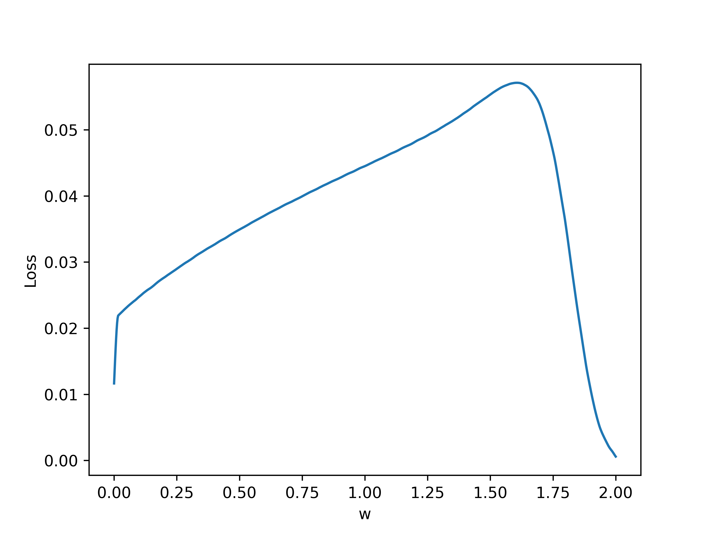

Loss Landscapes Emerging from BNNs
Introduction
My research is currently focused on training network of biological neurons (BNNs) on machine learning (ML) tasks. In another post, I dive into a specific task well suited for BNNs: training BNNs on spiking data. In that work, I encountered a number of issues. One issue was designing a clear loss reflecting the desired solution of the BNN. I found that the loss landscape* exhibited discontinuities and very chaotic gradients at the micro scale but had structure at the macro scale. This blog post focuses on analyzing loss landscapes for some simple examples with the aim of building up some understanding and proposing solutions to facilitate training in such contexts.
* The loss landscape is a surface of losses on a subset of the data resulting from small perturbations in network parameters. For example, if the network, \(N_w\), just has one parameter, \(w\), then the loss landscape is the set \(\{\text{loss}(N_{w'}(X),Y^*) | w - \delta w \leq w' \leq w + \delta w\},\) where \(\delta w\) is specified and \(X, Y^*\) are the inputs and targets, respectively, for the subset of samples.
Most Simple Case
The simplest case I considered here was simply turning a single Hodgkin-Huxley (HH) neuron off, so that it does not spike anymore. Let \(\eta = (V, m, n, h)\) denote the neuron state which is composed of voltage and gating variables. If \(a(t)\) is the output of the neuron at time \(t\), then we can let the loss just be the average output over some time interval \(\tau\): $$L(\eta) = \frac{1}{\tau} \int_0^\tau a(t) dt.$$ Ultimately, we aim to minimize \(L\), meaning that the neuron outputs as little as possible.
Loss Landscape
First, let's generate the loss landscape by running a single neuron trial with a time interval \(\tau = 1\) second, and evaluating the final loss. Varying the single weight parameter \(w\) gives the following results, where blue denotes loss and orange denotes number of firings:
 Note that around \(w = 1.8\) is where the neuron undergoes a bifurcation and the behavior changes, leading to no firing. This is due to the fact that a neuron can only fire so many times within a given interval.
Note that around \(w = 1.8\) is where the neuron undergoes a bifurcation and the behavior changes, leading to no firing. This is due to the fact that a neuron can only fire so many times within a given interval.
We can also look at a subset of the plot for more clear detail. Here is a zoom in on the range \(w \in [0.5, 0.75]\):

These plots demonstrate some key problems with the task and performing gradient descent. In particular, the zoom in shows that the loss changes chaotically on the micro scale and any approximate gradients would have to be almost infinite to approximate these changes. Furthermore, there are large discontinuous jumps in the loss when a the number of firings changes. Regarding the former problem, it might seem that we can increase the resolution very high so that the micro changes are more smooth. However, increasing the resolution cannot fix the latter problem because changes in firing still cause discontinuous jumps no matter what the resolution because this is an integer valued discontinuous function itself.
At this point, the goal may seem hopeless. How can we get gradients from something so chaotic? Let's understand what is causing the issues. Note that we are using a fixed timeframe \(\tau\) which may not be sufficiently long. Even worse, we are only using a single neuron to evaluate the loss curve. If we let \(N_{trials}\) denote the number of neurons we use to sample the loss, in the limit \(\tau, N_{trials} \rightarrow \infty\) the big varied jumps in the loss curve should go away. So, let's add noise to each neuron (with fixed initial conditions for now) and increase \(N_{trials}\). If we let \(N_{trials} = 10\), below is the resulting loss curve:
As can be seen, the discontinuities are much less extreme. Let's also zoom in as we did above:
Wow! A curve that previously looked like a discontinuous mess now appears to be almost completely straight! This makes sense because each of the 10 trial neurons fires at different times and so the effects of firings are much less abrupt for a single trial. We can still see some high frequency noise in the curve but otherwise it looks much better.
Gradient Descent on This Landscape
Approximate Approach
The next step in analysis of this very simple case is actually trying out gradient descent as an optimization method. Firstly, let's try a finite difference approach based on the precomputed loss curve. Suppose we are given the loss curve as a set: $$\{(w_i, L(w_i)) | w_{i+1} = w_i + \Delta w, i=1...n\}.$$ Instead of automatically differentiating to compute gradients of \(L\) with respect to \(w\), we can just use a centered difference approximation: $$\frac{\partial L}{\partial w_i} \approx \frac{L(w_{i+1}) - L(w_{i-1})}{2 \Delta w}.$$ We can then use this approximate derivative to do a gradient descent step: $$w \mapsto w - \eta \frac{\partial L}{\partial w}.$$ Finally, since we are operating on the set of points \(w_i\), we can round to the nearest gridpoint (which should not be a big change with a high resolution grid).
Let's see what happens with varied initial values of \(w\) and learning rates \(\eta\). First, below is a plot with initial \(w = 1.5, \eta = 0.1\):
 Note that the gradient descent gets "stuck" because it keeps jumping between two values. Here is the same case but with \(\eta = 0.2\):
Note that the gradient descent gets "stuck" because it keeps jumping between two values. Here is the same case but with \(\eta = 0.2\):
 In this case, one of the approximate gradients is simple 0 (i.e. the curve is flat at this point) so it gets stuck again.
In this case, one of the approximate gradients is simple 0 (i.e. the curve is flat at this point) so it gets stuck again.
Things are not looking that good. The issue is that at the micro scale there is a lot of noise in the curve even though it posses a tangent that is quite clear without the noise. This suggests a possible fix: let's try using multiple sample points to compute the approximate tangent. To do so, we can select points locally to the left and right of the sample point then use a linear regression fit to approximate the tangent. Here is an example of such fitting at a point on the loss plot with 5 neighbors sampled to both the left and right:

If we use an adaptive value of \(\eta\) that grows over learning (so that we don't get stuck as above) and the linear regression approach with 10 local neighbors, we get convergence:

Automatic Approach
text here
Molification
One possible avenue for generating loss landscapes that are more easy to do gradient descent on is "molification." Molification is the application of a "molifier" to a badly behaving function (e.g. very jagged with discontinuities) through an operation such as convolution. A molifier is defined by the following criteria:
I intuitively think of the final criteria as requiring that the function "looks like" a discontinuous jump at the \(n\)th derivative scale. Here is an example of a function undergoing progressive molification from Wikipedia (which, incidentally, I think they used ray-tracing to produce):

The canonical molifier is the bump function \(\phi(x)\) on \(\mathbb{R}^n\) defined by $$ \phi(x) = \begin{cases} k_n e^{\frac{1}{|x|^2 - 1}} & |x| \lt 1 \\ 0 & |x| \geq 1 \end{cases},$$ where \(k_n\) is chosen to be one over the volume so that condition (2) above is satisfied:

Note that is might be tempting to use a function like a Gaussian blob as a molifier, but such a function is not compactly supported even though is gets very small as we let \(x\) grow.
Applying to BNN loss
There are two conceivable ways of applying molification to our task. Firstly, we can simply apply molification to the final loss function. This has a more straight-forward effect on the loss but it has the disadvantage of requiring us to compute all losses in a local neighborhood to perform molification at one point. Secondly, we could apply molification over time to the voltage trace outputted from a particular neuron. The idea with this is to "smooth" out the spikes leading to better gradients and is very related to the surrogate-gradients approach. The main difference is that in these approaches they are working with discontinuous neurons (leaky-integrate-and-fire) and most of the papers I have seen using this approach make LIFT neurons continuous by completely disregarding gradients when spikes occur.
Approach 1: Molifying Loss
TODO: Explore
Approach 2: Molifying Voltage
Here is a raster plot of 1000 neuron voltages with random noise and no transient and with the same input weight

Here are some examples of these voltage traces:

Let's try molifying the voltages. First, let \(t_0\) denote the time of the first spike occurence for the first voltage trace above. Let's zoom in around \(t_0\) for this voltage:

Here is a molifier using the scaled bump from above, where \(c\) is chosen to be some small value \(\lt \delta\) in the figure above:

Signal Processing Approach
This research is very open and I am considering a number of approaches. One that seems like a promising approach is using signal processing methods for training BNNs. This section will explore this.
Cross-Correlation
For real or complex functions \(f, g\) on some domain \(D\), their cross-correlation is defined as: $$(f \star g)(\tau) := \int_D \overline{f(t)} g(t + \tau) dt = \int_D \overline{f(t - \tau)} g(t) dt,$$ where \(\overline{f}\) is the complex conjugate and \(\tau\) is called the "lag". To understand this definition, if \(g(t)\) is a discrete signal and is just \(f(t)\) but shifted to the right by \(\tau\), then \(f \star g\) will be zero everywhere except at \(\tau = 1\), where it will be the integral of \(|f(t)|^2\), which is the squared L^2 norm of \(f(t)\). Note that if \(g, f\) are not signals and are continuously varying, then the cross-correlation will not be zero outside but will decay outside 1 and have a max at 1.
Cross-correlation loss: $$\text{Loss} = \int_0^T y(t) y^*(t + \tau) dt.$$